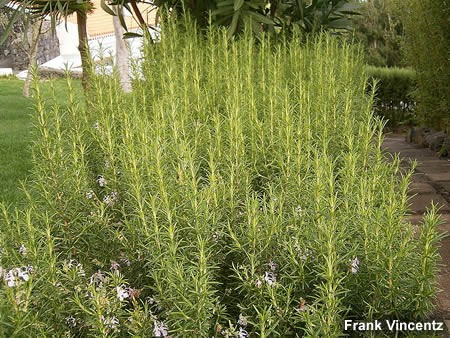

Alecrim
Postado em 2016-06-21
por Carla Minami

Cuidados de Cultivo:
O alecrim é uma planta que gosta de luz e de um clima seco.
- Evite colocar em locais escuros
- Precisa de pouca água
- Regas escassas sem encharcamento
Temperatura Ideal:
Nunca manter o alecrim abaixo dos 6°C.
Solo
O Alecrim tem seu sabor mais apurado quando plantado em solo pouco fértil. Não suporta solos encharcados, tendo boa resistência a periodos de estiagem.